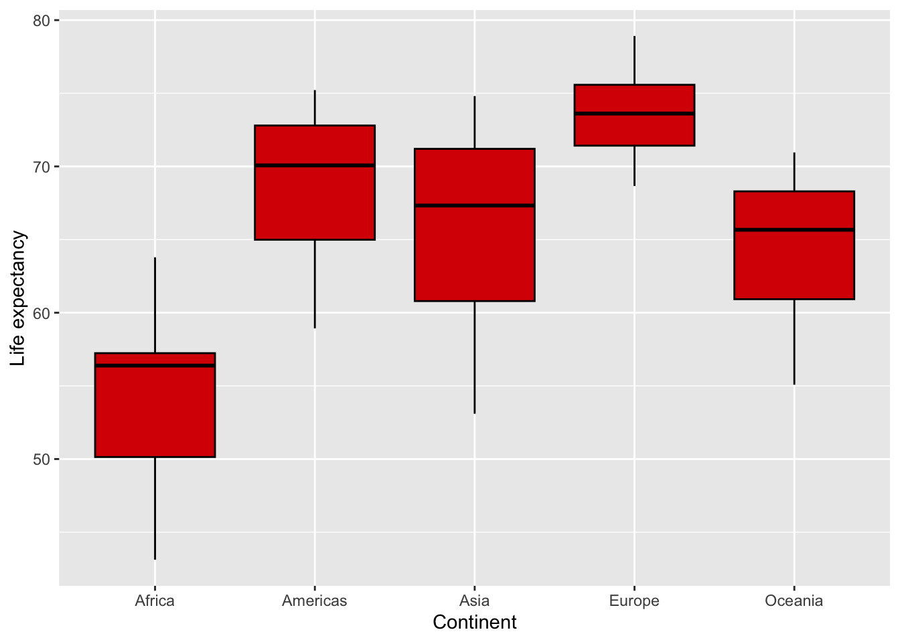

Only showing the first 6 rows using head, otherwise the document would be very long.
polls_us_election_2016 %>%filter(is.na(grade)) %>% head
state startdate enddate pollster grade samplesize
1 New Mexico 2016-11-06 2016-11-06 Zia Poll <NA> 8439
2 U.S. 2016-11-05 2016-11-07 The Times-Picayune/Lucid <NA> 2521
3 U.S. 2016-11-01 2016-11-07 USC Dornsife/LA Times <NA> 2972
4 Virginia 2016-11-01 2016-11-02 Remington <NA> 3076
5 Wisconsin 2016-11-01 2016-11-02 Remington <NA> 2720
6 Pennsylvania 2016-11-01 2016-11-02 Remington <NA> 2683
population rawpoll_clinton rawpoll_trump rawpoll_johnson rawpoll_mcmullin
1 lv 46.00 44.00 6 NA
2 lv 45.00 40.00 5 NA
3 lv 43.61 46.84 NA NA
4 lv 46.00 44.00 NA NA
5 lv 49.00 41.00 NA NA
6 lv 46.00 45.00 NA NA
adjpoll_clinton adjpoll_trump adjpoll_johnson adjpoll_mcmullin
1 44.82594 41.59978 7.870127 NA
2 45.13966 42.26495 3.679914 NA
3 45.32156 43.38579 NA NA
4 45.27399 41.91459 NA NA
5 48.22713 38.86464 NA NA
6 45.30896 42.94988 NA NA
2. Which polls were (i) polled by American Strategies, GfK Group or Merrill Poll, (ii) had a sample size greater than 1,000, and (iii) started on October 20th, 2016? (Hint: for (i) %in% might come in handy. Recall that vectors are created using the c() function. For (iii) make sure to check the format of the variable containing the poll’s start date.)
state startdate enddate pollster grade samplesize population
1 U.S. 2016-10-20 2016-10-24 GfK Group B+ 1212 lv
rawpoll_clinton rawpoll_trump rawpoll_johnson rawpoll_mcmullin
1 51 37 6 NA
adjpoll_clinton adjpoll_trump adjpoll_johnson adjpoll_mcmullin
1 50.28058 39.98632 4.733277 NA
3. Which polls (i) did not have missing poll data for Johnson, (ii) had a combined raw poll vote share for Trump and Clinton greater than 95% and (iii) were done in the state of Ohio? (Hint: it might be practical to first create a variable containing the combined raw poll vote share for Trump and Clinton and then filter.)
4. Which state had the highest average Trump vote share for polls which had at least a sample size of 2,000? (Hint: you’ll have to use filter, group_by, summarise and arrange. To obtain ranking in descending order check arrange’s help page.)
# A tibble: 26 × 2
state mean_trump
<fct> <dbl>
1 Alabama 62.5
2 Missouri 48.5
3 Indiana 47
4 Texas 46.0
5 South Carolina 45.5
6 Georgia 45.3
7 Kansas 44
8 New Mexico 44
9 Florida 44.0
10 Ohio 43.9
# ℹ 16 more rows
Task 2: Understanding the data
Load the data by running the following code:
library(dslabs)data(gapminder, package ="dslabs")
1. Compute the average population per continent per year, mean_pop, and assign the output to a new object gapminder_mean. (Hint: you should have one observation (row) per continent for each year. You’ll have to use group_by and summarise.)
`summarise()` has grouped output by 'continent'. You can override using the
`.groups` argument.
Task 3: Visualising data
Using the gapminder data, create the following plots using ggplot2. Don’t forget to label the axes.
1. A histogram of life expectancy in 2015. (Hint: do you need to specify a y in aes() for a histogram?) Once you’ve created the histogram, within the appropriate geom_* set: binwidth to 5, boundary to 45, colour to “white” and fill to “#d90502”. What does each of these options do? Optional: Using the previous graph, facet it by continent such that each continent’s plot is a new row. (Hint: check the help for facet_grid.)
2. A boxplot of average life expectancy per year by continent. Within the appropriate geom_* set: colour to “black” and fill to “#d90502”. (Hint: you need to group by both continent and year.)
`summarise()` has grouped output by 'continent'. You can override using the
`.groups` argument.

3. A scatter plot of fertility rate (y-axis) with respect to infant mortality (x-axis) in 2015. Once you’ve created the scatter plot, within the appropriate geom_* set: size to 3, alpha to 0.5, colour to “#d90502”.
3. Create a density plot of GDP in 2011 using geom_density. A density plot is a way of representing the distribution of a numeric variable. Add the following code to your plot to show the median and mean as vertical lines. What do you observe? geom_vline(xintercept = as.numeric(mean_GDP), colour = "red") + <br> geom_vline(xintercept = as.numeric(median_GDP), colour = "orange")
The distribution of GDP is highly skewed: there are many countries with small GDPs and very few with huge GDPs (U.S., Japan, China). In such cases, the average will be (significantly) greater than the median. To see this more clearly, here’s a graph where I’ve transformed the x-axis such that each tick is 10 times larger than the previous one (the scale is therefore not linear, i.e. the first tick is 100,000, the second is 1 million, the third is 10 million, etc.).
4. Compute the correlation between fertility and infant mortality in 2015. To drop NAs in either variable set the argument use to “pairwise.complete.obs” in your cor() function. Is this correlation consistent with the graph you produced in Task 3?
gapminder %>%filter(year ==2015) %>%summarise(cor(fertility, infant_mortality, use ="pairwise.complete.obs"))
cor(fertility, infant_mortality, use = "pairwise.complete.obs")
1 0.8286402
This correlation is positive and strong (relatively close to 1) which is consistent with the graph produced in Task 3. Indeed, that graph displayed a positive relationship between these two variables and the points were not that dispersed.